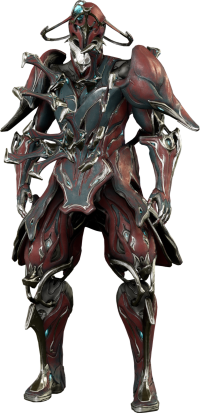
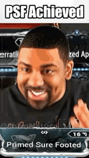

Warframes Steel-path
Se focaliser sur un tout petit pool de warframes au début, de préférence avec déjà de bons outils de survie embarqués de base sans trop d'investissement.
Se forcer à bien lire les descriptifs complets du kit de la frame (Arsenal > Survol Frame > Abilities : lire le passif, les compétences et tous les tips).
Envisager d'ajouter un Helminth de dégâts ou de survie.
FRAMES CONSEILLÉES
La sélection est déjà réduite, pour pousser encore plus loin les top prio / super-meta / facile sont indiqués en gras :
Prio : autonome résistance dégats & status
Dante, Revenant, Kullervo, Follie
Nezha, Rhino, Valkyr, Trinity, Gauss, Atlas, Uriel
Très bons : résistance dégats + besoin d'ajouter une résistance status
- ajouter résistance contrôle/status extérieure :
- Nova, Protea, Wisp, Baruuk, Hildryn, Ash, Citrine, Nyx, Yareli, Xaku, Octavia
- cas particulier : Lavos (passif + Synth Fiber pour retirer le CD)
Choix bonus
- Rush Spy/Capture : Wukong, Titania, Voruna (bonus vélocité)
- Platforme d'armes : Saryn, Mirage, Volt, Oraxia
- autres : en principe toutes les frames sont viables, celles listées peuvent juste faciliter un peu l'accès au steel path et sont moins exigeantes que d'autres niveau survie/dps/modding.
MODS FRAME : SURVIVRE
- vie, armure & mod Adaptation :
- sans arcane : pour le début du steel path ça peut permettre de passer un cap. Des compétences de réduction de dégâts peuvent aider aussi. Après ça s'essouffle (lvl 1500+ en mission infinie) mais c'est pas grave du tout ici.
- avec arcane Persistence : tanking basé sur la vie/armure viable en lvl cap.
Prérequis :
- minimum 700 d'armure pour l'activation. Compter 1400 d'armure pour gérer les procs de feu ou corro (1892 pour proc+corro en même temps mais très rare) réduisant l'armure. Envisager des éclats d'archonte bleus.
- prendre en compte les statuts magnetique et les nullifiers pouvant désactiver l'arcane (!) :
- statut : soit utiliser des cleanse (Molt de Saryn, mod Roulade Parade), soit des immunité statut (Scarab Armor d'Inaros, 4 d'Oraxia, lien de Trinity, helminth Spellbind de Titania / Well of life de Trinity, etc...)
- nullifiers : avoir assez d'aoe ou des armes de melee avec beaucoup de portée et/ou statut impact. Envisager une arme à tir rapide ou pouvant annuler les boucliers (Miter avec Neutralizing Justice)
- Shieldgating :
- Catalyzing Shields + Brief Respite / mods Augure : gameplay actif/dynamique et demandeur en énergie, donc besoin d'une bonne gestion (Flux + Equilibrium et/ou peu d'Efficacité et/ou helminth Nourish de Grendel, par exemple)
- Primed Redirection + Guardian (mod compagnon) : technique coûteuse, se complète avec Vigilante Vigor + Fast Deflection voire Arcane Aegis si on veut abuser. Pour le compagnon avec Guardian, privilégier un Diriga (Arc Coil + Guardian + Manifold Bond + Momentous Bond + (Primed) Regen, PAS d'Assault Mode) et une arme pleine de statuts (Prime Laser Rifle + Viral/Feu/Mag/Rad)
- Omamori (helminth) + Catalyzing Shields + Vigilante Vigor + Fast Deflection +/- Arcane Aegis : quasi-invincibilité passive tant qu'Omamori est maintenu
- Invisibilité : très fort mais sensible aux balles perdues (mauvais placements) et aux dégâts sur le temps (Rolling Guard compense)
- Pouvoir de frame : Ash, Ivara, Loki, Octavia, Oraxia, Voruna, Wisp, Wukong, Cyte-09
- Helminth :
- Compagnons : pour les frames "caster" qui n'ont pas besoin d'utiliser d'arme (Protea, Xaku, Dante...)
- Shade Prime : plus solide (moins d'aggro), accès au mod Guardian
- Huras Kubrow : companion libre qui peut mourrir plus facilement, donne l'accès aux mods récupérateur + nuke Kubrow
ÉNERGIE
Dans la plupart des cas se retrouver à court d'énergie est synonyme de mort : soit on ne tue plus les ennemis dangereux, soit on ne lance plus de compétences pour alimenter le shieldgating.
Deux stratégie principales que l'on peut cumuler :
- réduire le coût des sorts :
- efficacité : réduction directe
- Arcane Sculptor
- frame (très) compatible : Cyte, Follie, Gara, Gyre, Jade, Protea, Vauban, Volt
- helminth (très) compatible : Brightbonnet (Nokko), Molt (Saryn), Astral Shell (Sirius & Orion)
- Arcane Sculptor
- durée : pour les buffs, moins de casts / minute => moins d'énergie dépensée
- augmenter le stock/pool d'énergie et les moyens de le remplir
- stock d'énergie : flux, flux accru, shard archonte bleues (2-3 max)
- apport d'énergie :
- communs / meta :
- drop + conversion orbes de santé : compagnon AoE + Synth Deconstruct) + conversion santé > énergie (Equilibrium, shards violettes)
- compétence helminth :
- Nourish de Grendel, combo possible avec Energy Nexus et/ou Archon Stretch (proc avec Arc Coil du Diriga ou de l'elec sur les griffes de votre compagnon)
- Brightbonnet de Nokko. Les rebonds du projectile de la compétence ou d'une frame sur les champignons créés permet d'accélérer la régénération d'énergie. Pensez à "spam" contre un mur pour faire rebondir sur des champis très rapidement. Excellent combo avec Arcane Sculptor.
- Arcane Energize le plus cher/dur à farmer aujourd'hui mais très efficace (prioriser reroll Vosfor, drops events ou plats... runs Eidolon en dernier recours)
- tuer un Eximus : drop garanti d'une orbe d'énergie
- Pad d'energie Large ("pizza") : à bind sur un raccourci dans la roue des consommables + raccourci clavier/gamepad. Peut être spam en normal, cooldown en SP. Schéma craft x100 dispo en dojo.
- peu communs :
- archon shard jaune : +50% efficacité sur les orbes d'énergie (+75% pour tauforgée)
- Parazon : faire un finisher avec Blood for Energy
- Compétences non-helminth
- Duplex Bond + compagnon qui tape fort en mêlée
- Ecole de focus Zenurik Energy Pulse (incompatible avec certains modes de jeu demandant Madurai)
- Arcane Primary Exhilarate sur arme principale primer (ex : Bubonico qui a de l'impact forcé + AoE)
- Arcane Emergence Dissipate pour opérateur
- Energy Generator du compagnon Dethcube
- Xata Invocation du Grimoire (arme secondaire)
- Rage / Hunter Adrenaline : perdre de la vie revient souvent à se faire OS à un certain point en Steel Path, éviter sauf exception
- effet Entropie de la faction du Céphalon Suda : passivement en obtenant de l'XP en portant des armes/mods avec l'effet, génère 25% d'énergie max pour 30s et donne 25% d'énergie. Notablement Entropy Burst du Supra Vandal qui peut faire un fusil regen d'énergie et anti-bouclier nullifier grâce au firerate important.
- communs / meta :
HELMINTH
Débloquer l'helminth sur Deimos pour appliquer des pouvoirs sur d'autres frames et libérer des emplacements de frame sans les "jeter" inutilement.
Helminths prioritaires
Très forts, communs & meta :
- dégats (buff stats) :
- Roar de Rhino pour booster l'anti-faction, synergise avec les dégats sur le temps (feu, blast, toxine, elec)
- Xata de Xaku pour ajouter des dégats du néant (beaucoup d'interactions + dégats de void bonus sur overguard + effet bulle magnetique)
- Nourish de Grendel pour buff gain énergie, bonus Viral, CC léger
- Wrathful Advance de Kullervo pour buff crit % en mếlée, inverser le cast via préférences et viser le sol
- tanking :
- armor strip : moins prioritaire aujourd'hui, permet de rendre les ennemis plus fragiles :
- Pillage d'Hildryn, strip shield & armure, nécessite beaucoup de puissance (plutôt avec aura Corrosive Projection) + LoS bloqué pas les murs, long cast
- Terrify de Nekros, armure uniquement, pas de LoS, nécessite peu de puissance, cast rapide, coûte pas mal d'énergie
- Tharros Strike de Styanax, strip armure et shield, LoS, cast rapide, soigne de la vie, range courte
- Ophanim Eyes de Jade, armure uniquement, debuff continu en cône de vision, peu d'énergie consommée + slow ennemi
Helminths niche
Parfois utiles, beaucoup moins visibles/prévalents :
- dégats (buff stats) :
- Eclipse. Augmente les dégats de base (comme un mod Serration). Fortement nerfé par le passé, peut être utile. Buff multiplicatif aux dégats appliqué après le reste. Double bonus pour les projectiles mêlée (Exodia Contagion, Glaives)
- Thermal Sunder de Gauss + mod augment Thermal Transfer pour ajouter du Blast
- Shock de Volt + Shock Trooper : boost dmg électrique
- Warcry de Valkyr : buff mếlée attack speed (surtout) et armure (un peu)
- Breach Surge de Wisp : multiplie les dégats reçus d'une cible pour les infliger sur une autre, léger CC (radiation + blind, ne touche pas les eximus)
- Airburst de Zephyr + Airbust Rounds : buff dégats armes secondaires, nécessite de toucher beaucoup de cibles (range) souvent une anti-synergie
- dégats (debuff) :
- Webbed Embrace d'Oraxia : CC zone (3 zones max) + debuff vulnérabilité (= augmentation dégats reçus)
- Sentient Wrath de Caliban: CC en cône + debuff vulnérabilité
- Rest & Rage d'Equinox (version Jour, nécessite une couleur d'émission claire sur la frame)) : boost vitesse ennemis + debuff vulnérabilité
- tanking :
- buff / effet frame:
- Molt de Saryn : légère aggro (part instant), buff vitesse de course, cleanse status & cast instant (pratique pour shield-gating)
- Null Star de Nova: 75% DR + CC
- Condemn de Harrow : régen shield + CC ennemis + headshots faciles
- Quiver d'Ivara, permet de créer des zones statiques d'invisibilité. Gameplay très particulier. Possibilité de lier la zone à une sentinelle, dur à réaliser de manière consistante en situation dangereuse
- Eclipse : 75% de réduction de dégats. Peut être partagé avec les alliés via Total Eclipse
- contrôle ennemis :
- Resonator d'Octavia, désactive complètement l'IA ennemie. Nécessite beaucoup de portée
- Astral Shell de Sirius & Orion : génère automatiquement quand touché des leurres invulnérables qui attirent les tirs sur eux sur 30m. A coupler avec un peu de regen bouclier. Compatible arcane Sculptor
- Silence de Banshee : désactive les compétences ennemies (aura eximus incluses) + court stun
- Shooting Gallery de Mesa + Muzzle Flash : très bon CC mais ne touche plus les eximus, petit buff dmg en plus
- Gloom de Sevagoth, Slow important + vol de vie, gros drain d'énergie
- Webbed Embrace d'Oraxia : CC zone (3 zones max) + debuff vulnérabilité (= augmentation dégats reçus)
- énergie : (hors Nourish...)
- Dispensary de Protea : génération d'orbes énergie/santé + munitions sur un point fixe
- Fractured Blast de Citrine pour génération orbes santé/énergie
- Lycath's Hunt de Voruna pour génération orbes santé sur attaques mếlée / énergie sur headshots (utiliser Equilibrium + mếlée)
RESISTANCE STATUS
Les status des ennemis ont 3 dangers principaux :
- les dégats sur le temps : surtout toxine, feu, slash
- les contrôles : les plus ennuyants sont les Knockdown et Stagger vous bloquant sur place
- drain d'énergie via le statut Magnétique, moins commun mais possiblement mortel
On peut s'en protéger de différentes manières via des immunités ou des cleanse/retaits. Nécessite le kit de frames spécifiques ou des sources externes (helminth, mods, compagnons, arcanes).
Immunité contrôles :

- pas obligatoire, fortement recommandé. En steel path il y a + d'eximus et une plus grande densité de mobs : + de contrôles dangereux. Etre immunisé permet d'éviter de mourir pendant qu'un mob te fait tomber sans pouvoir réagir
- avoir une frame immunisée via compétences ou Overguard (cf warframes)
- utiliser Primed Sure Footed ou Handspring pour les contrôles
- éviter Sure Footed (non-prime)
- si PSF impossible, préférer Handspring, ne prend qu'un seul mod
- Sure Footed (non-prime) + Fortitude possible pour 100% immunité mais mange un emplacement et "cassera" vos builds, rarement envisageable (sauf si survie déjà basée sur regen shield passive)
- Negate de Wyrm en combo avec Manifold Bond pour réduire le cooldown. Nécessite d'être très à l'aise en DPS et d'arriver à maintenir en vie votre compagnon / le faire revenir rapidement (Momentous Bond + Primed Regen et autres)
MODS AUGMENT
Aussi appellés mods de syndicat.
- accès facile : monter les syndicats se fait passivement, vous pouvez échanger les augments les plus demandés de vos syndicats contre d'autres mods ou contre des pl et acheter les mods qui vous manquent.
- utilité très variable : on oscille entre "obligatoire / hyper OP" à "meh".
- augments notables (prio / super-meta indiqués en gras, compatibilité helmint avec une étoile *):
- Loot :
- Khora : Pilfering Strangledome
- Nekros : Despoil
- Tanking :
- Kullervo : Volatile Recompense
- Revenant : Mesmer Shield
- Frost : Icy Avalanche
- Ember : Healing Flame
- Nekros : Shield of Shadows, redirige les dégats et les effets de statut
- Styanax : Intrepid Stand
- Nyx : Assimilate
- Loki : Safeguard's Switch
- Yareli : Merulina Guardian
- Volt : Capacitance
- Dagath : Spectral Spirit
- Hydroid : Tidal's Impunity (shieldtank) / Rousing Plunder (healthtank)
- Dégâts :
- Titania : Razorwing Blitz
- Saryn : Venom Dose
- Volt : Shock Trooper*
- Hildryn : Aegis Gale
- Sevagoth : Shadow Haze + Dark Propagation
- Khora : Accumulating Whipclaw
- Valkyr : Eternal War*
- Gyre : Cathode Current, Conductive Sphere
- Mirage : gun platform : Total Eclipse* / Hall of Malevolence , nuke : Explosive Legerdemain
- Frost : Biting Frost / Freeze Force
- Ember : Fireball Frenzy
- Nova : Neutron Star* + Molecular Fission (bonus tank)
- Lavos : Valence Formation
- Gauss : Thermal Transfer*
- Caliban : Razor Mortar
- Nezha : Divine Retribution
- Banshee : Resonance
- Zephyr : Funnel Clouds
- Limbo : Rift Torrent
- Excalibur : Furious Javelin / Chromatic Blade
- Baruuk : Reactive Storm / Elusive Retribution
- Citrine : Prismatic Companion / Recrystalize
- Grendel : Gastro
- Qorvex : Fused Crucible
- Armor Strip :
- Mag : Fracturing Crush
- Nyx : Pacifying Bolts
- Trinity : Ablating Link
- Side-grade / change le gameplay :
- Yareli : Loyal Merulina
- Protea : Temporal Erosion, Temporal Artillery
- Trinity : Vampire Leech + durée négative
- Koumei : Omikuji's Fortune
- Voruna : Ulfrun's Endurance / Prey of Dynar
- Garuda : Blending Talons (améliore la rotation de sorts)
- Volt : Shocking Speed
- Mesa : Mesa's Waltz (inutile : ne pas l'équiper et prendre un peu de Vélocité permet d'être encore plus mobile sans perte de DPS)
- Atlas : Rubble Heap + Path of Statues
- Equinox : Energy Transfer
- Mirage : Prism Guard (rush Nuke early SteelPath)
- Wisp : Cataclysmic Gate
MOBILITÉ
Les manoeuvres sont la base du mouvement de warframe : bullet-jumps, roulades, glissades... vidéo de référence
Partie fondamentale du jeu que ce soit pour :
- le plaisir du jeu
- la vitesse de déplacement
- la survivabilité
- la roulade fournit 75% de dégats réduits, voire une invulnérabilité via Rolling Guard
- un déplacement rapide baisse énormément la probabilité de toucher / l'accuracy des ennemis
- Survival Instinct du Sly Vulpaphyla permet même de reset l'IA de ciblage ennemie toutes les 5 secondes via un bullet jump
Sources communes :
- Velocité : impact majeur, augmente les distances des bullet-jumps et roulades
- Praedos : 30% (+bonus vitesse course)
- Archon shard jaune : +15 / +22.5%
- mods vélocité : relativement de niche, peut remplacer PSF en exilus sur certains builds si vous avez une invulnérabilité ou êtes à l'aise
- exilus Proton Pulse pour les cascadeurs avertis
- arcanes (plus rares) Agility & Consequence
- Vitesse de course
- Praedos +20% (ok + bonus vitesse vélocité)
- Innodem / Okina incarnon : +30% (max pour mếlée)
- exilus mếlée : Dispatch Overdrive : +60% après attaque lourde (surtout builds slam)
- Amalgam Serration : pour arme principale
- helminth : Molt : usage multiple avec status cleanse + vitesse + dépense instantannée d'énergie pour shieldgating
- Dodge Speed : une seule source, Amalgam Barrel Diffusion sur arme secondaire
- Slide : impact mineur
Sources spécifiques :